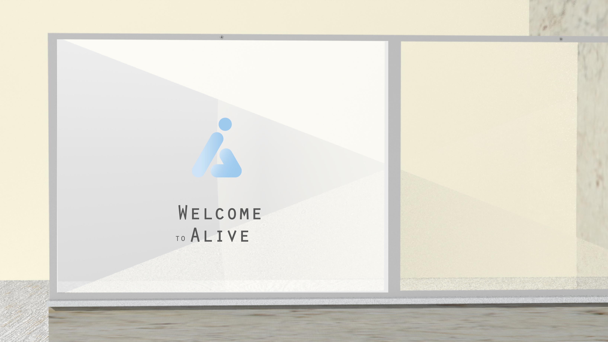

Interaction Designer
Su Hyun Jung

Alive
Sep - Dec 2020
“Alive” is a system created to help people who are living through and after the pandemic to form community in an increasingly digitalized world. Alive assists users in managing their mental health inside their community by providing indoor activities and social gathering opportunities through a life-sized streaming screen. Moreover, it allows users to watch their loved ones anytime through the screen when they miss them or want to check in with them. Through the virtual communication system, Alive allows people to gather together inside the digitized space; this platform encourages the feeling of coexisting in one space and without a feeling of isolation, which contributes to mental health issues.